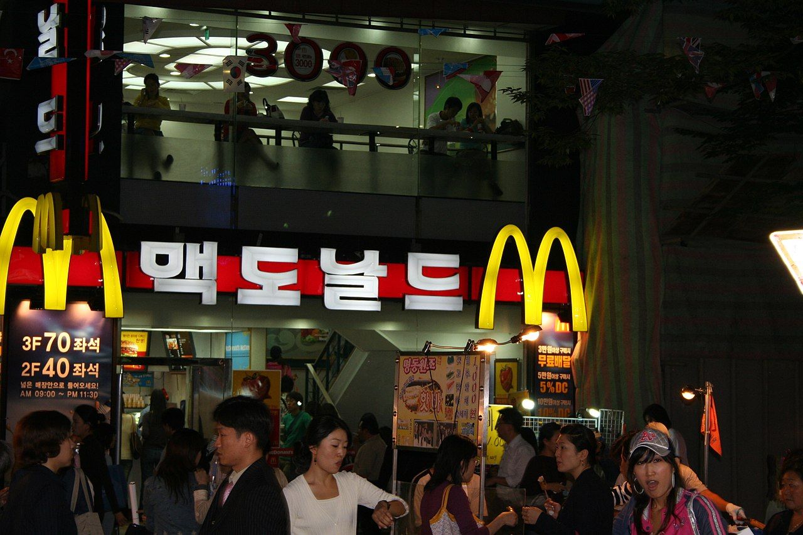

맥도날드(영어: McDonald's)는
미국의 세계적인 패스트푸드 체인점이다. 전 세계 39,000개
매장에서 하루에 약 6500만명의 고객이 찾고 있는 세계에서 가장 널리 알려진 체인 음식점이며,
햄버거 체인점으로는 가장 규모가 크다. 맥도날드는 주로 햄버거, 감자튀김, 콜라, 치킨류, 아침
메뉴, 패스트커피, 디저트류 등을 제공하고 있다. 최근의 웰빙 경향을 반영해 샐러드, 과일 등의
식물성, 건강한 음식들을 메뉴로 제공하고 있기도 하다.
1940년, 맥도날드는 미국 캘리포니아주 몬로비아 공항 근처 헌팅턴 드라이브(미국도 66)에
"비행장"이라는 뜻을 가진 '에어드롬'(Airdrome)이라는 상호의 식당을 창업하였다. 당시 햄버거는
10센트였고, 오렌지 주스는 5센트였다. 같은 해에 그의 두 아들인 모리스와 리처드는 본래 있었던
식당 자리에서 동쪽으로 40마일 떨어진 캘리포니아주에 있는 서부 샌버너디노 1398 노스 E
거리에 이사하며 식당 이름을 개명하였는데 이것이 "맥도날드의 바베큐"였다
<맥도날드 플라자>
<서울특별시에 있는 한 맥도날드 점포>

<맥도날드의 햄버거 , 감자 튀김, 콜라>
| 품목 | 품명 | 세트 | 단품 |
|---|---|---|---|
| 버거 | 1955 버거 | 7300 | 5700 |
| 빅맥 | 5300 | 4300 | |
| 맥모닝 | 맥모닝 에그 | 4300 | 2300 |
| 베이컨에그 | 2500 | ||
| 치킨 | 맥너겟 | 2300 | |
| 맥윙 | 1100 | 1300 | |
© 2021 그린컴퓨터. All rights reserved.